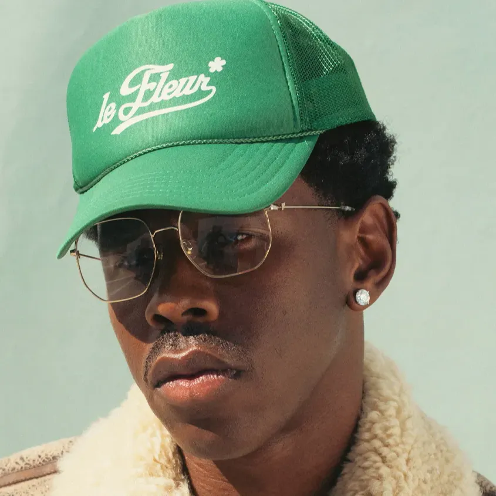

Tyler, The Creator
Born: 06 March 1991
Age:
Years Active: 2007–present
Genre/s: Alternative hip-hop, neo soul, West Coast hip-hop, jazz rap, hardcore hip-hop, horrorcore
Label/s: Columbia, Odd Future, Sony, RED, XL
Tyler Gregory Okonma (born March 6, 1991), known professionally as Tyler, the Creator, is an American rapper and record producer. Best known for his eclectic and experimental music, raw rhymes and extensive use of alter-egos and alternate personas in his albums, he has been described as an influential figure in alternative hip-hop during the 2010s and 2020s. In the late 2000s he led and co-founded the music collective Odd Future. Within the group, Tyler participated as a rapper, producer, director and actor, releasing studio albums that he produced for its respective members. Tyler also performed on the group's sketch comedy show Loiter Squad (2012–2014).
Along with his collaborations with the group, Tyler developed his solo career beginning with his self-released debut studio album, Bastard (2009). His second studio album, Goblin (2011), brought him mainstream media exposure, aided by the popularity of the single "Yonkers" and its accompanying music video. During this period, Tyler faced controversy in the media for his horrorcore-influenced sound and his violent, transgressive lyrical content.
After the release of his third studio album, Wolf (2013), Tyler began to separate himself from his horrorcore productions, turning to more accessible sounds incorporating fusions of jazz, soul and R&B. In 2015, Tyler released his fourth studio album, Cherry Bomb, which featured guest appearances from artists Lil Wayne and Kanye West. In 2017, Tyler released Flower Boy, which earned him widespread critical acclaim and commercial success. Igor (2019) and Call Me If You Get Lost (2021) debuted at number one on the US Billboard 200 and won Best Rap Album at the 2020 and 2022 Grammy Awards, respectively. His following albums, the eclectic Chromakopia (2024) and the dance-imbued Don't Tap the Glass (2025), both debuted at number one in the US, with the former yielding the highest first-week sales of his career.
Aside from his musical productions, he embarked on clothing ventures Golf Wang and Le Fleur, collaborating with Lacoste, Converse and Louis Vuitton. Tyler is the founder of the Camp Flog Gnaw Carnival music festival, which has been held annually since 2012, and has featured appearances from Kanye West, Drake, Kendrick Lamar, Lana Del Rey, and Billie Eilish. He has also directed all of the music and promotional videos of his career, under the pseudonym "Wolf Haley". In 2025, Tyler made his feature film debut as Wally in Josh Safdie's Marty Supreme (2025), under his birth name.
Tyler has won three Grammy Awards, three BET Hip Hop Awards, a BRIT Award, and a MTV Video Music Award. In 2019, he was named "Music Innovator of the Year" by The Wall Street Journal. In 2024, the Los Angeles Times featured Tyler in its "L.A. Influential" series as a "creator who is leaving their mark" in Los Angeles.